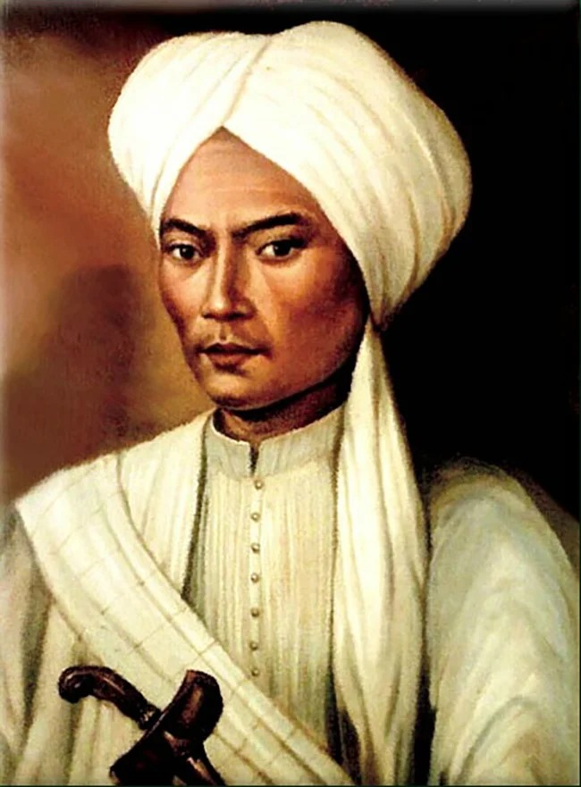

Biodata

Pangeran Diponegoro, lahir dengan nama Raden Mas Mustahar pada 11 November 1785 di Yogyakarta, adalah salah satu pahlawan nasional Indonesia. Ia merupakan putra Sultan Hamengkubuwono III, tetapi memilih menolak kehidupan di istana dan lebih dekat dengan rakyat. Diponegoro dikenal sebagai sosok religius dan kharismatik.
Namanya terkenal karena memimpin Perang Jawa (1825-1830), perlawanan terbesar melawan penjajahan Belanda pada abad ke-19. Perang ini dimulai karena ketidakpuasan terhadap campur tangan Belanda dalam urusan Jawa, serta penindasan yang semakin meningkat. Meski akhirnya ditangkap pada 1830 dan diasingkan ke Makassar, perjuangan Pangeran Diponegoro menginspirasi semangat kemerdekaan Indonesia di kemudian hari. Ia wafat pada 8 Januari 1855.
Pendidikan
Riwayat pendidikan Pangeran Diponegoro umumnya berkutat di sekitar keraton. Ia mendapatkan pendidikan kesastraan Islam-Jawa. Ia juga mendapat pengajaran bergaya pesantren yang lebih formal tentang Al Quran dan hadis dari ulama yang berkunjung ke Tegalrejo. Saat beranjak dewasa, tepatnya pada 1805, namanya diubah oleh sang kakek, Sultan Hamengkubuwono II, menjadi Raden Mas Ontowiryo.Pada masa itu juga, ia menemukan minat baru, yakni berkelana di hutan dan gunung. Dalam perjalanannya, RM Ontowiryo bertemu dengan Kyai Mojo, yang kemudian menjadi penasihat spiritualnya. Raden Mas Ontowiryo juga senang bertapa di perbukitan di sekitar Yogyakarta, khususnya di Gua Langse (Gunung Kidul), di mana ia mendapat banyak ilham. Ketika ayahnya resmi naik takhta pada 1812 menjadi Sultan Yogyakarta dengan gelar Sultan Hamengkubuwono III, Raden Mas Ontowiryo dinobatkan sebagai pangeran dengan nama Pangeran Harya Dipanegara. Sejak saat itu, Raden Mas Ontowiryo dipanggil Pangeran Dipanegara atau Pangeran Diponegoro. Atas perjuangan dan jasa Pangeran Diponegoro bagi Indonesia, pemerintah memberinya gelar Pahlawan Nasional sesuai SK Presiden RI No. 087/TK/1973 pada 6 November 1973.
Peristiwa penting
Peristiwa paling penting dalam kehidupan Pangeran Diponegoro adalah Perang Jawa (1825-1830). Perang ini dipicu oleh ketidakpuasan Diponegoro terhadap campur tangan Belanda dalam urusan pemerintahan Jawa, terutama soal pajak dan penggunaan lahan. Ketegangan memuncak ketika Belanda memasang patok jalan melalui tanah milik Diponegoro tanpa izin.
Diponegoro memimpin perlawanan besar melawan Belanda, yang melibatkan ribuan penduduk Jawa. Meskipun akhirnya kalah dan ditangkap pada 1830, Perang Jawa menyebabkan kerugian besar bagi Belanda dan memperlihatkan semangat perlawanan bangsa Indonesia. Ini menjadi salah satu pemberontakan terbesar terhadap kolonialisme di Indonesia. Diasingkan hingga wafat: